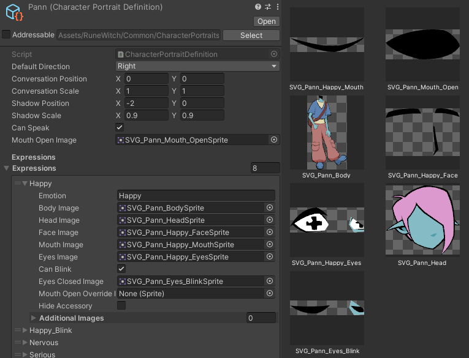
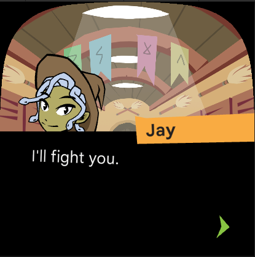
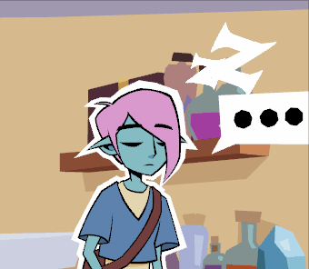
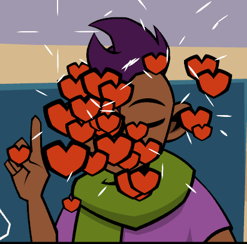
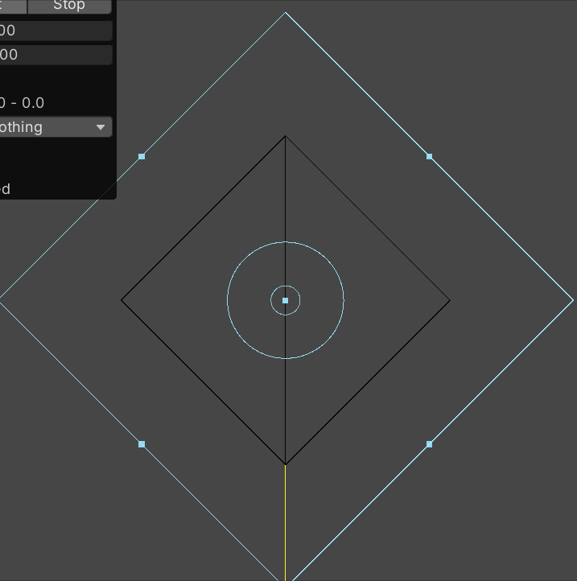
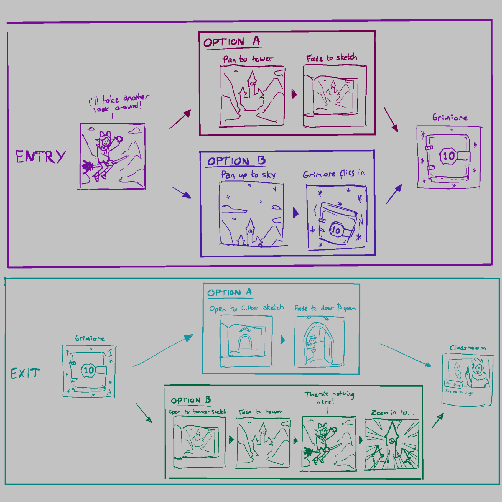

Rune Witch Academy Commissioned project for Google's Fitbit Ace LTE smartwatch 2000-01-01 Role(s) Technical Art VFX Art Programming Client Google Tags Blender Unity Android runtime vector sprite recolouring dynamic weather effects   character portrait effects  spell VFX: Repair spell VFX: Grow/Shrink spell VFX: Translate 